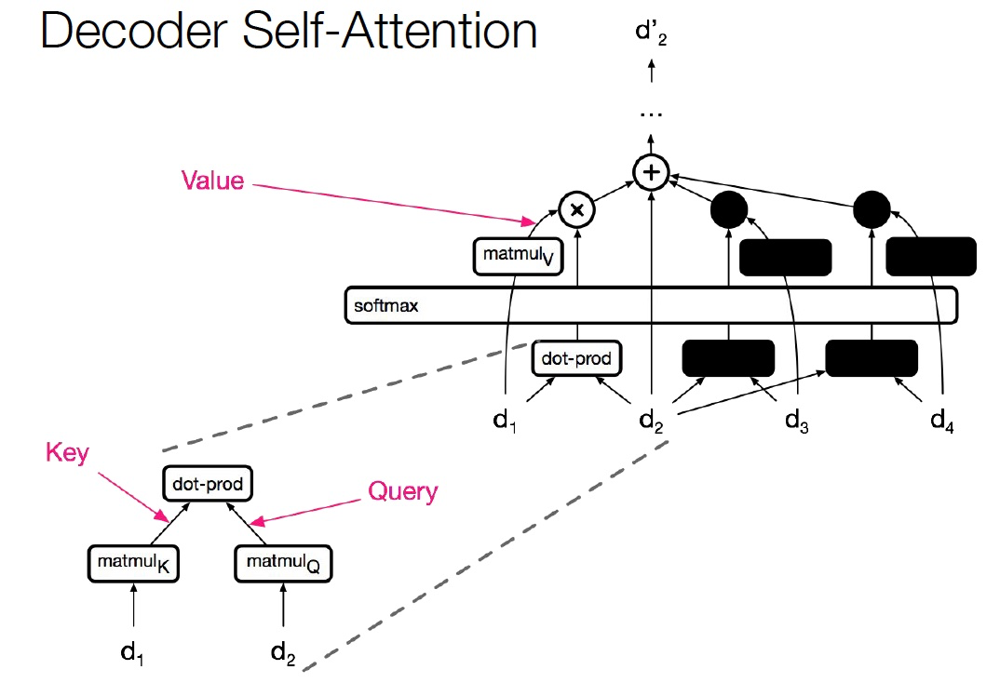
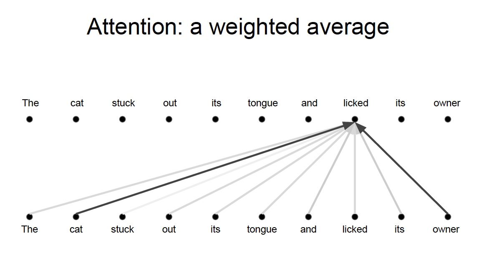
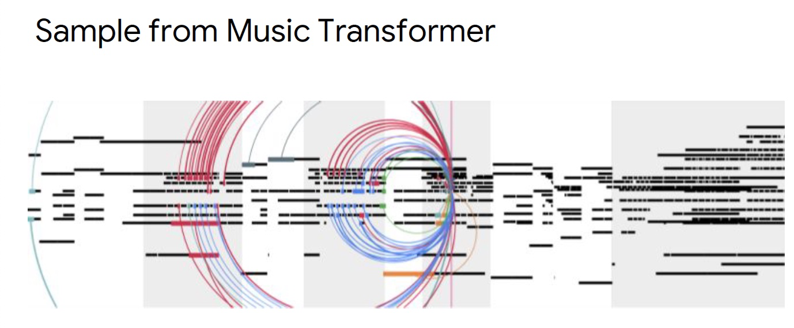
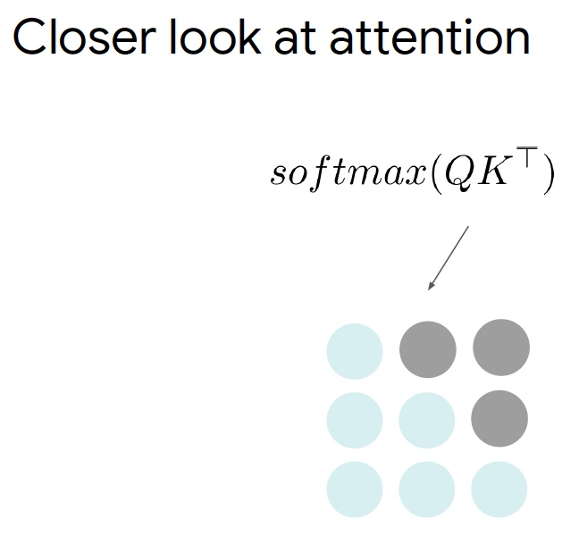
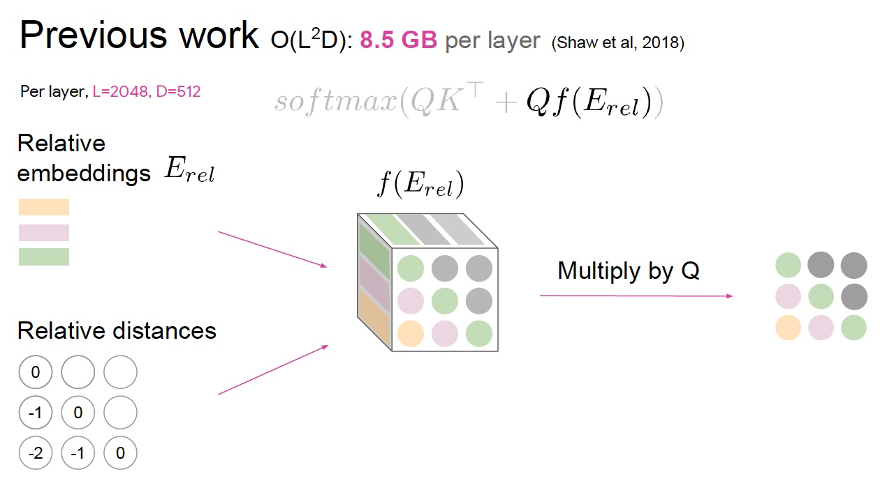

14 Transformers and Self-Attention For Generative Models
Lecture 14 Transformers and Self-Attention For Generative Models¶
Ashish Vaswani and Anna Huang
学习变长数据的表示，这是序列学习的基本组件（序列学习包括 NMT, text summarization, QA）
通常使用 RNN 学习变长的表示：RNN 本身适合句子和像素序列
- LSTMs, GRUs 和其变体在循环模型中占主导地位。

-
但是序列计算抑制了并行化。
-
没有对长期和短期依赖关系进行显式建模。
-
我们想要对层次结构建模。
- RNNs(顺序对齐的状态)看起来很浪费！
卷积神经网络

- 并行化(每层)很简单
- 利用局部依赖
- 不同位置的交互距离是线性或是对数的
- 远程依赖需要多层
注意力
NMT 中，编码器和解码器之间的 Attention 是至关重要的
为什么不把注意力用于表示呢？
Self-Attention

-
任何两个位置之间的路径长度都是常数级别的
-
门控 / 乘法 的交互
-
可以并行化（每层）
-
可以完全替代序列计算吗？
Text generation¶
Previous work
Classification & regression with self-attention:
Parikh et al. (2016), Lin et al. (2016)
Self-attention with RNNs:
Long et al. (2016), Shao, Gows et al. (2017)
Recurrent attention:
Sukhbaatar et al. (2015)
The Transformer

Encoder Self-Attention

Decoder Self-Attention

复杂度

由于计算只涉及到两个矩阵乘法，所以是序列长度的平方
当维度比长度大得多的时候，非常有效

Problem

上例中，我们想要知道谁对谁做了什么，通过卷积中的多个卷积核的**不同的**线性操作，我们可以分别获取到 who, did what, to whom 的信息。

但是对于 Attention 而言，如果只有一个Attention layer，那么对于一句话里的每个词都是同样的线性变换，不能够做到在**不同的位置提取不同的信息**
这就是多头注意力的来源，灵感来源于 CNN 中的多个卷积核的设计Solution

Who, Did What, To Whom 分别拥有注意力头


- 将注意力层视为特征探测器
- 可以并行完成
- 为了效率，减少注意力头的维度，并行操作这些注意力层，弥补了计算 差距


Results

- 但我们并不一定比 LSTM 取得了更好的表示，只是我们更适合 SGD，可以更好的训练
- 我们可以对任意两个词之间构建连接
Importance of residuals¶

位置信息最初添加在了模型的输入处，通过残差连接将位置信息传递到每一层，可以不需要再每一层都添加位置信息
Training Details
- ADAM optimizer with a learning rate warmup (warmup + exponential decay)
- Dropout during training at every layer just before adding residual
- Layer-norm
- Attention dropout (for some experiments)
- Checkpoint-averaging
- Label smoothing
- Auto-regressive decoding with beam search and length biasing
- ……
Self-Similarity, Image and Music Generation¶


Probabilistic Image Generation
- 模拟像素的联合分布
- 把它变成一个序列建模问题
-
分配概率允许度量泛化
-
RNNs和CNNs是最先进的(PixelRNN, PixelCNN)
- incorporating gating CNNs 现在在效果上与 RNNs 相近
- 由于并行化，CNN 要快得多
- 图像的长期依赖关系很重要(例如对称性)
- 可能随着图像大小的增加而变得越来越重要
- 使用CNNs建模长期依赖关系需要两者之一
- **多层**可能使训练更加困难
- 大卷积核 参数/计算成本相应变大
Texture Synthesis with Self-Similarity
自相似性的研究案例


A Non-local Algorithm for Image Denoising (Buades, Coll, and Morel. CVPR 2005)
Non-local Neural Networks (Wang et al., 2018)
Previous work
Self-attention:
Parikh et al. (2016), Lin et al. (2016), Vaswani et al. (2017)
Autoregressive Image Generation:
A Oord et al. (2016), Salimans et al. (2017)
The Image Transformer


Combining Locality with Self-Attention


- 将注意力窗口限制为本地范围
- 由于空间局部性，这在图像中是很好的假设
Music generation using relative self-attention¶
Raw representations in music and language


传统的 RNN 模型需要将长序列嵌入到固定长度的向量中
Continuations to given initial motif

给定一段音乐并生成后续音乐
- 不能直接去重复过去的片段
- 难以处理长距离



- 移动的固定过滤器捕获相对距离
- Music Transformer 使用平移不变性来携带超过其训练长度的关系信息，进行传递


-
位置之间的相关性
-
但是音乐中的序列长度通常非常长


- 将相对距离转化为绝对距离


Self-Attention¶
任意两个位置之间的路径长度是常数级的
没有边界的内存
并行化
对自相似性进行建模
相对注意力提供了表达时间、equivariance，可以自然延伸至图表
Reference¶
以下是学习本课程时的可用参考书籍：
《基于深度学习的自然语言处理》 （车万翔老师等翻译）
以下是整理笔记的过程中参考的博客：
斯坦福CS224N深度学习自然语言处理2019冬学习笔记目录 (课件核心内容的提炼，并包含作者的见解与建议)
斯坦福大学 CS224n自然语言处理与深度学习笔记汇总 这是针对note部分的翻译